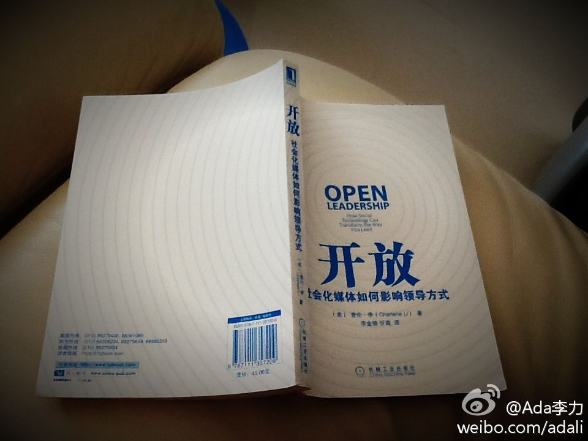
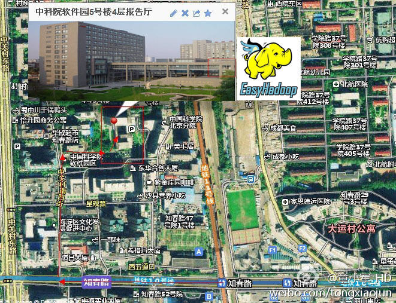
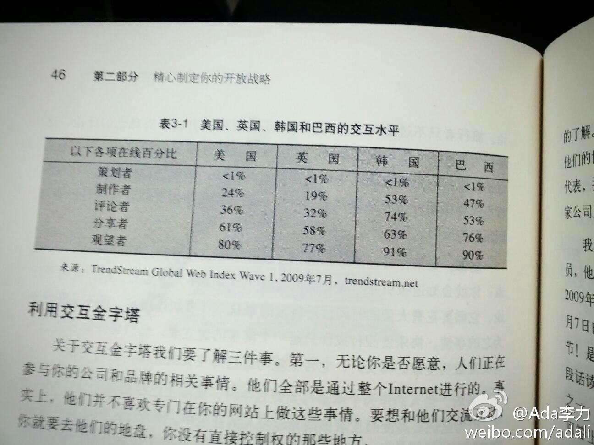

#开放#这本书原英文名是＂open leadership＂,翻译过来是＂开放领导力＂，中文书名去掉领导力大概是这三字说滥了，书的副标题是＂社会化媒体如何影响领导方式＂。这本书是咱是从MDCC大会的CSDN展台上领到的。 
我问过姣姣，我和她换换，她去上班，我去上学，她不干。我建议她和爸爸换换，她也不干。她对上学没啥抵触，可能是明俊和我从没对她上学这事儿表示过同情，没在她面前说什么学业重，压力大之类的话，所以她觉得上学和做作业是天经地义的事儿。
网上常看到贫困山区孩子缺衣号召大家捐赠的微博。我在四年前响应过一次搜狐组织的活动后，再遇到这事儿就不回应了，因为我估计自己口头响应容易，实际做很困难。捐出东西容易，但整理，打包，邮寄这些事情，想想我就打退堂鼓了。
活动明天下午在@车库咖啡 举行，是CSDN创业俱乐部与36氪合半。为创业团队找技术合伙人的＂非程勿扰＂第二期，俺还做主持。@36氪:36氪携手@CSDN 举办“非程勿扰”活动，帮助创业企业对接开发人员 | 36氪联合国内最大的开发者社区CSDN 为我们的创业企业以及CSDN 的开发人员们打造一全新对接平台“非程勿扰”。希望推动优秀的人才去加盟优秀的创业企业，实现个人与企业的共同受益。 网页链接
帮转。 //@少年振南: 感谢小军和向磊组织的这个平台，欢迎大家来听。 //@童小军_HD: @和谐天朝 @Ada李力 @少年振南 @龚才春 @plantegg @阿里云 @蒋涛CSDN //@EasyHadoop: 欢迎参加,转发。@TongXiaoJ1641422615:小而美的聚会 2012年11月24日 中科院软件园5号楼4层报告厅 真实负载的MapReduce性能评价-王凯 HDFS HA和Federation实践-孙振南 HDFS多租户实现-刘刚 Apache Ambari Hadoop监控系统-史东杰 Firtex开源引擎构建分布式搜索引擎-郭瑞杰 JVM异常快速定位和内存优化-任喜军 网页链接 
写错时间了，是11月22日，周四。//@贾国清_Frank:帅气，周末办活动蛮辛苦的@Ada李力:11月24日，全国六城市同时举办＂移动开发者咖啡馆沙龙＂，这对组织者要求蛮高，活动组的同事全出动了，公司里可以作主持的，也全拉出来了。分给我的是武汉场。
//@CSDN李涛: 六城联动，翼起来，协调组织难度非常大。但在世界末日前一个月，我们一定要好好聚聚，因为末日之后就是崭新的世界，移动互联网的世界，移动应用开发者的黄金时代！//@小布three-天翼空间:中国电信应用创新大赛沙龙活动六城联动@Ada李力:11月24日，全国六城市同时举办＂移动开发者咖啡馆沙龙＂，这对组织者要求蛮高，活动组的同事全出动了，公司里可以作主持的，也全拉出来了。分给我的是武汉场。
“Open Leadership"中提到在线交互活动的五类人群，金字塔从上到下的排列是：策划者，制作者，评论者，分享者，和观望者。作者对企业有三个建议：要去对方的地盘，对方不喜欢专门上你的网站；和这些人直接对话；不要过多关注金字塔最高层的人们，工作重点应该从低层开始，确保交互活动有强有力的根基。 
#态度# 员工对任务推三阻四，会被说成工作态度不好。写个文档，简单粗糙，拼写错误一堆，被看作是态度不好。因为自己生活中不愉快，碰到同事或客户有些摩擦，总能发起火，也会被说成态度不好。可我觉得，这关态度什么事情，这都是不职业，不专业的表现！
谁提出约会以及安排地点，谁就应该买单，何况这个还带有招聘性质。另外，谁说男女一起吃饭喝咖啡，就该男的买单？女性这种思维要不得。@刘瑶:刚面试了个人，简历很漂亮，北大毕业，MBA。我约在咖啡店，结果俺买单，他丝毫客气都没有，饮料都是我端的，大男人家家的，这般不懂人情世故。注重细节，成就自己。#瑶言#
社会上消费者居多，而且现在商品成本价格越来越透明，没有实际价值支撑的高价格，让人骂很正常。对“溢价”的估值，国外尚且无标准，国内还在刚起步阶段吧。@西门爱宝V:现在社会上出现一种＂高利润仇恨综合症＂，看到溢价高的商品就口诛笔伐，尤以夹杂义和团情绪的国内外同品牌差价批判为甚。市场经济，只要不强买强卖，高利润是商家成功经营的标志。可见农业经济时代的商业思维，阴魂不散